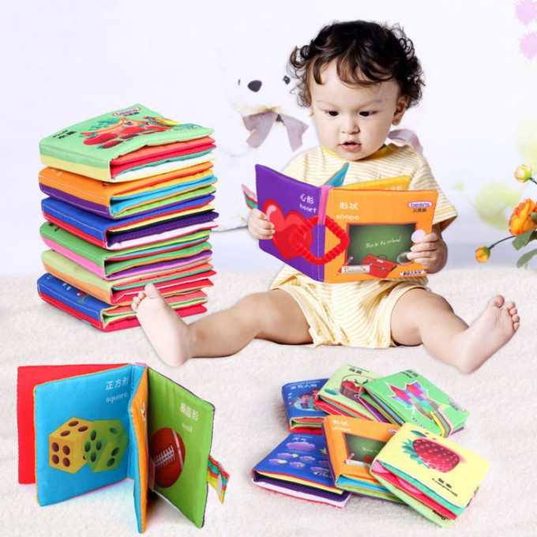
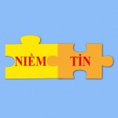

Tổ chức Niềm Tin xuất thân từ Nhóm thiện nguyện có tên gọi là Nhóm Hỗ trợ trẻ em nghèo- khuyết tật Niềm Tin, đã thành lập vào ngày 15/10/2015. Sau 4 năm hoạt động, nhóm nhận thức:
Mô hình từ thiện theo cách truyền thống,chỉ chú trọng vào việc tặng quà, trợ cấp đột xuất, thường xuyên, không thể vươn tới một sự phát triển bền vững, nếu không có sự tham gia đóng góp (công sức, tài chính) của phụ huynh, và các bên liên quan vào các hoạt động can thiệp cho trẻ.
Mỗi trẻ là một cá thể riêng biệt, mỗi khó khăn khác nhau, nên việc hỗ trợ trẻ có nhu cầu đặc biệt, không chỉ đơn thuần hỗ trợ kinh phí, mà cần phải kết hợp với việc chọn lựa và sử dụng phương pháp can thiệp phù hợp với mỗi loại khó khăn của từng trẻ.
Để đánh giá sự thành công của 1 dự án hỗ trợ trẻ có nhu cầu đặc biệt, phát triển, bồi dưỡng khả năng huy động nguồn lực để khẳng định năng lực “tự đứng vững” của mạng lưới “hệ sinh thái cộng đồng” trong bối cảnh chuyển giao nền kinh tế tại Việt Nam hiện nay.
Phấn đấu trở thành một tổ chức phi lợi nhuận tại Việt Nam, hỗ trợ trẻ khuyết tật và gia đình của trẻ được hoà nhập vào xã hội, bằng chính sự quyết tâm và tự tin của gia đình.
Với tinh thần độc lập và tự chủ, tổ chức NiềmTin luôn nổ lực hết mình để cung cấp đa dạng các phương pháp hỗ trợ, can thiệp trực tiếp hoặc gián tiếp để tạo ra sự thay đổi nhận thức cho trẻ khuyết tật và gia đình của trẻ trên con đường hoà nhập vào xã hội.
Ban Cố Vấn: Đào Thị Minh Lệ (Chủ nhiệm tổ chức Y Tâm)
Ban Quản Trị: Hồ thị Thúy Hằng, Phạm thị Kim Loan (Phụ huynh)
Ban Điều Hành:
Chủ nhiệm trực tiếp điều hành: Nguyễn Thị Phương Dung
Phó Chủ nhiệm: tuyển dụng sau
Ban kinh doanh và Phát triển lợii nhuận: Trần Kim Phú
Cung cấp các dịch vụ hỗ trợ và can thiệp rối loạn nhận thức về ngôn ngữ, cho trẻ trong độ tuổi từ 7 đến 18 tuổi (có thu phí và có chế độ miễn giảm tùy theo từng trường hợp).
Thiết kế và sáng tạo các đồ chơi nhằm thúc đẩy quá trình phát triển ngôn ngữ cho trẻ (tặng, bán gây quỹ tùy trường hợp).
Thực hiện các chương trình hỗ trợ:Chương trình hỗ trợ các thiết bị, dụng cụ phục hồi chức năng cho trẻ nhu cầu đặc biệt (trẻ khuyết tật).
Hỗ trợ các thiết bị Phục hồi chức năng cho trẻ có nhu cầu đặc biệt thuộc hộ nghèo, đang sống trong các khu vực không thể tiếp cận được với các thông tin hiện đại (sau khi được Niềm Tin khảo sát và đánh giá)
Chương trình hỗ trợ, tư vấn dành cho phụ huynh có trẻ là nhu cầu đặc biệt
Hỗ trợ cho phụ huynh vay vốn để phát triển kinh tế tại nhà (số lượng có hạn và phải được Niềm Tin khảo sát và đánh giá).
Tư vấn, giới thiệu chuyển gửi và hướng dẫn phụ huynh chọn lựa các dịch vụ can thiệp phù hợp tại các Cơ sở và các Tổ chức bạn có uy tín (Câu lạc bộ Sống cùng Tự Kỷ, Hội thiện nguyện gia đình Siêu Nhân, lớp Nắng, Mái ấm TERESA CALCUTTA, Trung Tâm ViNaHealth…).
Liên kết với các Cơ Sở, mạng lưới Quản trị Quyền Trẻ Em để tổ chức các buổi hội thảo chuyên đề nhằm nâng cao nhận thức cho phụ huynh về Quyền Trẻ Em và Phương pháp Phục hồi chức năng cho trẻ tại gia đình (dựa vào nhu cầu của phụ huynh).
Chương trình hỗ trợ hỗ trợ nghề nghiệp cho trẻ khuyết tật
Hỗ trợ kinh phí cho các em trong độ tuổi 15-18 là trẻ có nhu cầu đặc biệt, có hoàn cảnh khó khăn muốn đi học nghề.
Giúp các em định hướng nghề nghiệp dựa vào khả năng còn lại.
Chương trình cơ hội vui chơi và hội nhập xã hội.
Liên kết với các Tổ chức có cùng tiêu chí hoạt động trong lĩnh vực trẻ em để tổ chức các hoạt động xã hội vào các ngày lễ, Tết trong năm.
Kể từ ngày 9/9/2019 Niềm Tin sẽ sử dụng Logo (1) thay cho Logo (2)
Logo (1)
Logo (2)
Ý nghĩa của Logo: Nếu có Niềm Tin nhất định sẽ ghép được những mảnh ghép trên những bức tranh. Nếu chúng ta có niềm tin với trẻ có nhu cầu đặc biệt, nhất định sẽ chọn được những phương pháp can thiệp phù hợp, như chọn đúng những mảnh ghép để tạo ra những bức tranh tương lai khá hoàn chỉnh cho trẻ.